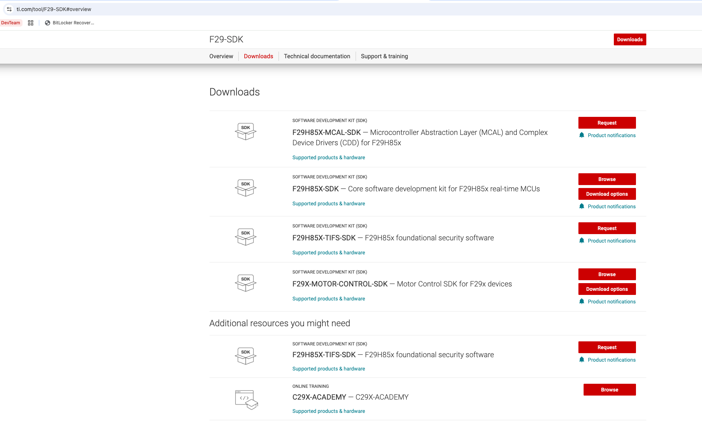
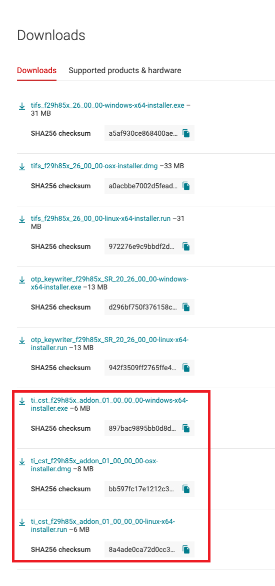
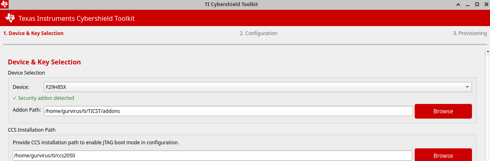

Installation Guide
This section provides detailed instructions for installing the TI Cybershield Toolkit on different platforms. This is primarily intended for developers and is not required for normal users.
System Requirements
- Hardware Requirements:
PC with USB port for device connection
UART or JTAG connection hardware
- Software Requirements:
Python 3.10 or higher
For Windows: appropriate USB-to-Serial drivers
For Linux: appropriate permissions for serial port access
Code Composer Studio (CCS) 20.5.0 — required for JTAG provisioning (key provisioning, code provisioning) and
signSecCfgsigning
Note
For GUI functionality, a desktop environment supporting Qt5 is required.
For PKCS#11 HSM smart card support, additional hardware and drivers are required.
CCS is only required for JTAG-based operations. UART-only workflows do not need CCS installed.
Installation Methods
The TI Cybershield Toolkit can be installed using different methods depending on your requirements.
Using Python Package Installer (pip)
# Install virtual environment tool
pip install virtualenv
# Create a virtual environment
virtualenv venv
# Activate the virtual environment
# On Linux/macOS:
source venv/bin/activate
# On Windows:
venv\\Scripts\\activate
# Switch to host directory to find the pyproject.toml file
cd host
# Install the package and its dependencies
pip install -e.
# For GUI support, add the gui extra
pip install -e.[gui]
# On macOS, use pip3 and quote the argument:
pip3 install -e '.[gui]'
# For development and testing tools
pip install -e.[dev]
# For documentation building tools
pip install -e.[docs]
After installation, you will have access to the cst command-line tool and the cstgui GUI application.
Launching the Application
To start the GUI, run the following command in your terminal (or virtual environment if one is active):
cstgui
To use the command-line interface:
cst --device f29h85x --help
Platform-Specific Setup
Linux
On Linux, you need to ensure your user has appropriate permissions to access serial ports.
# Add your user to the required groups
sudo adduser <username> dialout
sudo adduser <username> plugdev
# Log out and log back in for the changes to take effect
Warning
Do NOT run cst or cstgui as root or with sudo. Instead, fix the permissions by adding the user to the appropriate groups.
Windows
On Windows, ensure you have installed the appropriate drivers for your USB-to-Serial adapter. For JTAG functionality, ensure you have installed Code Composer Studio (CCS) 20.5.0 and configured it properly.
macOS
On macOS, you may need to install additional drivers for USB-to-Serial adapters. Follow the manufacturer’s instructions for your specific hardware.
Note
On macOS, ensure Python 3.10 or higher is installed. The system default Python may be older — install a newer version via python.org or Homebrew:
brew install python@3.10
Also use pip3 instead of pip and quote the extras argument to avoid shell interpretation issues:
pip3 install -e '.[gui]'
Verifying Installation
After installation, verify that the tools are properly installed:
# Check command-line tool
cst --version
# Check GUI tool (if installed)
cstgui --version
Security Addon Installation
The TI Cybershield Toolkit supports an optional Security Addon package that provides prebuilt secure binaries, enabling production-ready provisioning with minimal effort and no risk of using untested binaries.
Obtaining the Addon
The Security Addon is distributed as part of the F29H85X-TIFS-SDK (F29H85x foundational security software), available through the F29-SDK page on ti.com.
Navigate to the F29-SDK Downloads page
Locate F29H85X-TIFS-SDK — F29H85x foundational security software and click Request
{kind=link}

Once access is granted to the F29H85X-TIFS-SDK, the Security Addon for the TI Cybershield Toolkit will also be available for download within the same package.
Downloading and Installing
After gaining access, open the F29H85X-TIFS-SDK downloads page and scroll to the ti_cst_f29h85x_addon installers (highlighted below). Download the installer for your operating system:
{kind=link}

Windows:
ti_cst_f29h85x_addon_XX_XX_XX_XX-windows-x64-installer.exemacOS:
ti_cst_f29h85x_addon_XX_XX_XX_XX-osx-installer.dmgLinux:
ti_cst_f29h85x_addon_XX_XX_XX_XX-linux-x64-installer.run
Run the installer and follow the on-screen installation steps.
Installation Location
The default installation path is:
~/ti/TICST/addons
You may choose a custom location during installation. If you install to the default path, the TI Cybershield Toolkit will automatically detect the addon and load all secure binaries without any manual configuration — a green “Security addon detected” message will appear on the Device & Key Selection page:
{kind=link}

If you installed to a custom location, provide the path manually using the Addon Path field on the Device & Key Selection page (click Browse to navigate to your folder).
What the Addon Includes
The Security Addon package contains:
OTP Keywriter binary — SR_10 (Rev A) variant
TI FEK public keys — for both SR_10 (Rev A) and SR_20 (Rev B/Rev C) device revisions
Prebuilt Code Provisioning binaries — ready-to-use HSM provisioning images
Prebuilt C29 Secure Image examples — reference secure application images for the C29 core
Prebuilt TIFS HSSE Firmware — TI HSM firmware for HS-SE state
Note
With the addon installed, the Sign and Encrypt All Prebuilt Binaries feature on the Configuration page allows you to sign and encrypt all binaries in a single click using your keys, enabling a complete provisioning workflow with tested binaries and minimal effort.
Warning
The addon includes only the SR_10 (Rev A) OTP Keywriter binary. Users with Rev B or Rev C silicon (SR_20) must obtain the SR_20-specific OTP Keywriter binary separately from the SBL Keywriter package. Contact a TI representative for more information.
Installation Troubleshooting
Common installation issues and their solutions:
Missing Dependencies: Ensure you have Python 3.10 or higher installed
Permission Errors: On Linux, ensure your user is in the appropriate groups
GUI Not Starting: Ensure Qt5 dependencies are installed
PKCS#11 Errors: Verify the PKCS#11 library is correctly installed and specified